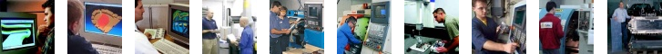

|
|
|
CAD/CAM, CNC, kalýp, makine ve imalat için, sektöre özel kariyer sitesi |
|  |
|
|
| Ýþ Ýlanlarý > Son ilanlar: |
| 28-11-2017 |
Proaktif Teknoloji |
CAD/CAM Eðitim ve Teknik Destek Sorumlusu, SolidWorks Eðitim ve Teknik Destek Sorumlusu, Ýstanbul |
| 27-02-2017 |
TTAF Elektronik |
CAD/CAM Operatörü (ESPRIT, SolidWorks), Ýstanbul |
| 05-08-2016 |
Polimatek |
Satýþ Sorumlusu, Ýstanbul |
| 24-06-2016 |
TTAF Elektronik |
Teknik Ressam (SolidWorks), Ýstanbul |
| 09-02-2016 |
Nikken A.Þ. |
Ürün Satýþ ve Destek Mühendisi, Ýstanbul |
| 11-11-2015 |
Çimtaþ |
Talaþlý Ýmalat Þefi (AutoCAD, SolidWorks, CATIA), CAM Operatörü (ESPIRIT, CATIA, NX), CNC Operatörü, Bursa |
| 09-11-2015 |
Merkad |
Kalite Kontrol Operatörü, CNC Freze Operatörü, CNC Torna Operatörü, Ýstanbul |
| 20-10-2015 |
Bures Teknik |
CAD/CAM Sorumlusu (NX), Kocaeli |
| 30-09-2015 |
Hassan |
Makine Ýmalat ve Montaj Personeli, Kocaeli |
| 30-09-2015 |
Makkalýp |
CNC Dik Ýþlem Tezgah Operatörü, Ýstanbul |
| 11-09-2015 |
Punto Makina |
CAD/CAM Operatörü, Yalova |
| 08-09-2015 |
Kale Havacýlýk |
CNC Freze Operatörü, Montaj Operatörü, Ýstanbul |
| 01-09-2015 |
4C Medikal |
Makine Mühendisi, Ýstanbul |
| 20-08-2015 |
Hidropar HKTM |
CNC Tezgah Operatörü, Kocaeli |
| 20-08-2015 |
Plast Met |
CNC-CAM Programcýsý (NX, Espirit, Hypermill), CNC Dik Ýþlem Tezgah Operatörü, Ýstanbul |
| 11-08-2015 |
Bures Teknik |
CNC Freze Operatörü: (Fanuc), CNC Torna Operatörü (Fanuc), Kocaeli |
| 24-07-2015 |
Elfjet Mühendislik |
3D Modelleme Uzmaný, Kocaeli |
| 08-04-2015 |
Faktör H |
CNC Dik Ýþlem Tezgah Operatörü (SolidCAM, SolidWorks), Ýstanbul |
| 26-03-2015 |
Delcam Türkiye |
Teknik Destek Sorumlusu (PowerSHAPE, ArtCAM), Ýstanbul |
| 13-03-2015 |
Universal |
CAD/CAM Uzmaný (SolidWorks, ArtCAM, WorkNC, PowerMILL), Plastik Enjeksiyon Kalýp Ustasý, Ýstanbul |
| 24-02-2015 |
Orsa Tasarým |
Teknik Personel, Ýstanbul |
| 26-11-2014 |
Orsa Proje |
Teknik Personel, Ýstanbul |
| 14-11-2014 |
Teknik Grup |
CAD/CAM Operatörü, Ankara |
| 14-11-2014 |
Þato Plastik |
CNC Dik Ýþlem Tezgah Operatörü (UGS NX), Ýstanbul |
| 31-10-2014 |
Masel Kalýp |
CAD/CAM Mühendisi (ESPRIT), CNC Operatörü, Manuel Frezeci, Ýstanbul |
| 26-09-2014 |
TSK Test Sistemleri |
Teknik Ressam, Tekirdað |
| 26-09-2014 |
Pimtaþ |
CAD/CAM Operatörü (UGS NX ), Kocaeli |
| 03-09-2014 |
TaeguTec |
Tasarým Mühendisi (CATIA ), Kocaeli |
| 28-08-2014 |
YKK |
CAD/CAM Mühendisi (AutoCAD, Pro/ENGINEER), Tekirdað |
| 22-08-2014 |
Geenta Kalýp |
Atölye Þefi, Ürün Geliþtirme Uzmaný, CAM ve CNC uzmaný, Kalýp Montaj Uzmaný, Kocaeli |
| 14-08-2014 |
Sarýgözoðlu |
Kalýp Tasarýmcýsý (AutoCAD, CATIA), CAM Operatörü (CATIA), CNC Freze Operatörü, Kalýp Montaj Ustasý, Manisa |
| 24-07-2014 |
Þato Plastik |
CAD/CAM Sorumlusu (Unigraphics), CNC Operatörü (Heidenhain), Kalýphane Kalfasý, Ýstanbul |
| 24-07-2014 |
... |
Kalýp Tasarýmcýsý ve Ýþleme (CAD/CAM) Sorumlusu (SolidWorks, ArtCAM, PowerMILL, WorkNC), Ýstanbul |
| 16-07-2014 |
Mar Otomasyon |
Makine Tasarým Sorumlusu, Ýstanbul |
| 11-06-2014 |
TANMODEL |
Plastik Enjeksiyon Kalýp Tasarýmcýsý, Ýstanbul |
| 05-06-2014 |
Orsa Proje |
Teknik Destek Mühendisi, Ýstanbul |
| 07-05-2014 |
Kalýpsan |
Kalýp Tasarýmcýsý (CATIA, SolidWorks), CNC Tezgah Operatörü, Ýstanbul |
| 25-04-2014 |
Özay Cam Kalýp |
CAD Operatörü (PowerSHAPE, ArtCAM), Ýstanbul |
| 24-04-2014 |
Walter Kesici Takýmlar |
Saha Satýþ Mühendisi, Ýstanbul |
| 17-04-2014 |
Armada Yazýlým |
CAD/CAM Satýþ Uzmaný, Ýstanbul |
| 25-03-2014 |
Ünterm Müh. |
CAD/CAM Teknikeri: (Machining Strategist, SolidWorks, SolidCAM), CNC Dik Ýþlem Tezgah Operatörü, Ýzmir |
| 12-03-2014 |
Veysel Kütüklü Makina |
Makine Mühendisi (SolidWorks), Ýstanbul |
| 05-03-2014 |
Yenasoft |
CAM Satýþ Mühendisi (ESPRIT), Ýstanbul |
| 03-03-2014 |
Nikken A.Þ. |
Satýþ Mühendisi, Teknik Servis Asistaný, Ýstanbul |
| 27-02-2014 |
Baðbek Kalýp |
CAD/CAM Operatörü (PowerSHAPE, PowerMILL), Ýstanbul |
| 18-02-2014 |
Veysel Kütüklü Makina |
Makine Mühendisi (SolidWorks), Ýstanbul |
| 11-02-2014 |
Ýzole Elektrik |
CAD/CAM Sorumlusu (Cimatron, SolidWorks), Ýstanbul |
| 04-02-2014 |
Hakan Ünlü Mühendislik |
Ürün Geliþtirme Mühendisi (SolidWorks), Ür-Ge Müh. Yardýmcýsý (SolidWorks), Ýstanbul |
| 23-01-2014 |
OC Plastik |
Teknik Ressam (SolidWorks), Ýstanbul |
| 10-01-2014 |
Truemed |
Tasarým Mühendisi (NX), Ýstanbul |
| 10-01-2014 |
Altunorak Kalýp |
Kalýp Tasarým Uzmaný (Pro/ENGINEER, AutoCAD), Mersin |
| 09-01-2014 |
... |
Kalýphane Yöneticisi, Kalýp Tasarýmcýsý, CAM Sorumlusu (SolidWorks, ArtCAM, PowerMILL, WorkNC), Ýstanbul |
|
*** Önceki ilanlar için: 2013 Arþivi ***
| CADCAMkariyer |
|
| tarafýndan desteklenmektedir |
|
|
|
CADCAMkariyer > CAD/CAM, CNC, kalýp, makine ve imalat için, sektöre özel kariyer sitesi |
|
|